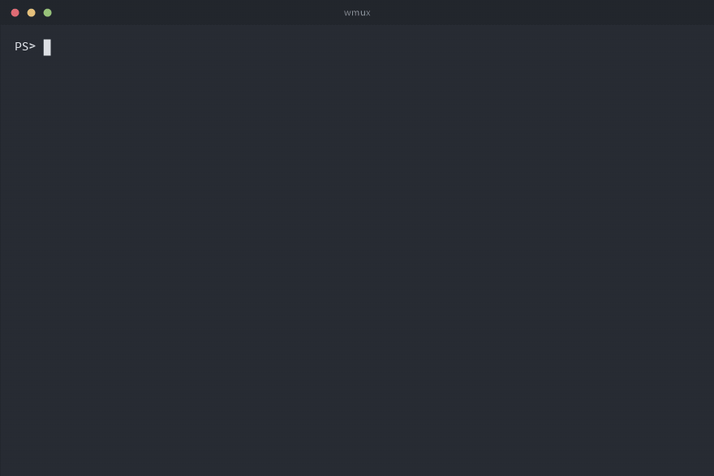
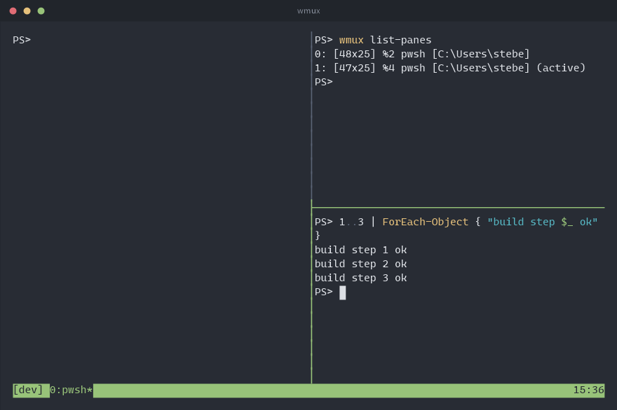
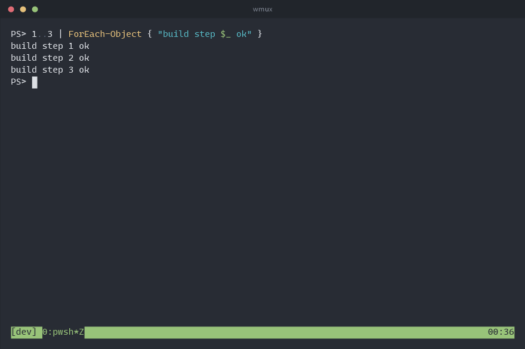
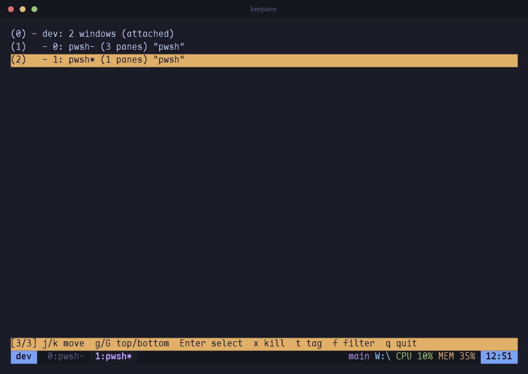
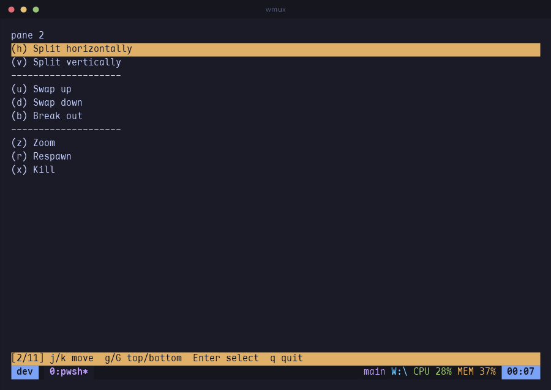
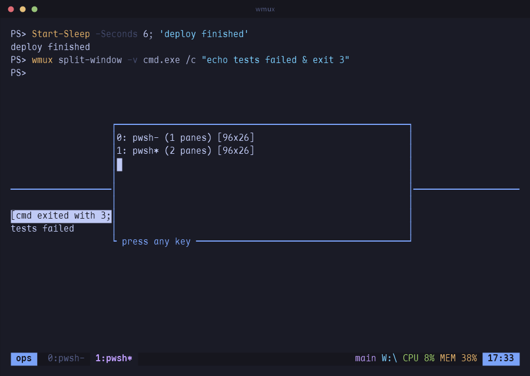
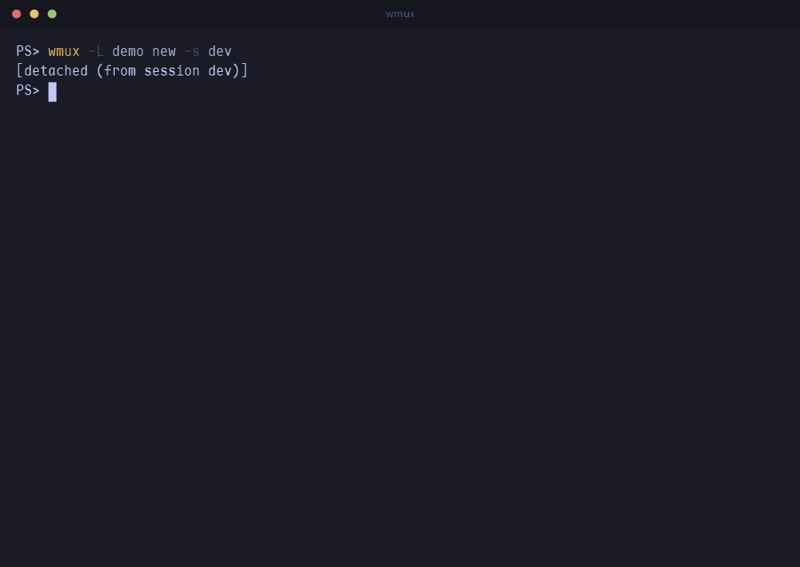
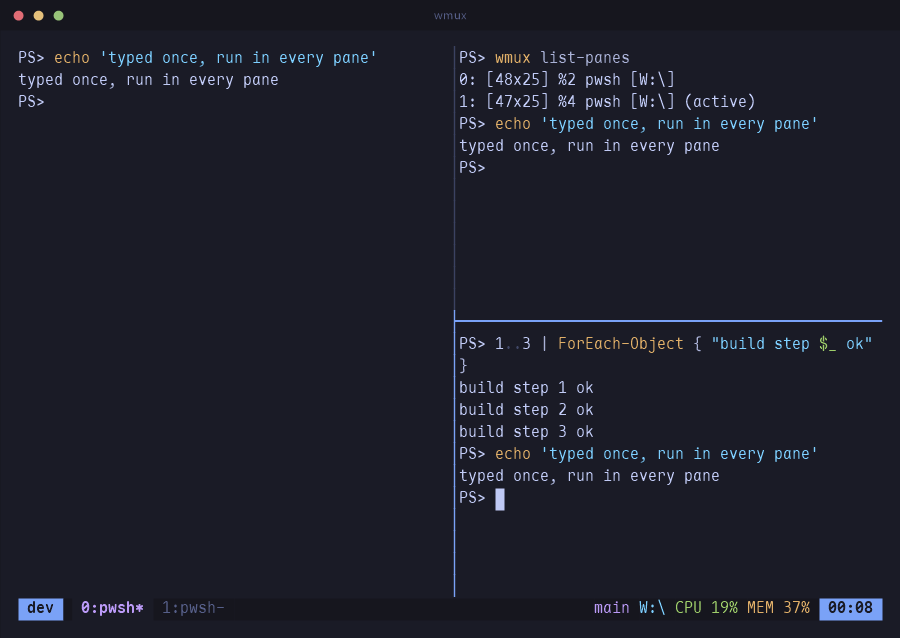
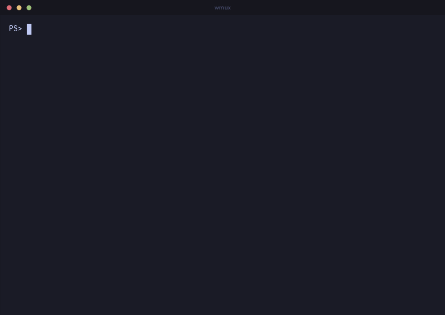

tmux, on Windows.
Split a terminal into panes, walk between them with h j k l, close the window and find everything still running when you come back. PowerShell, cmd and WSL all live inside panes, with every keystroke arriving intact.

Panes, the way you already know
C-b % splits left and right, C-b " top and bottom. Move with the vim keys or the arrows, and keep pressing: movement and resizing repeat without the prefix.

- Real terminals. Every pane is a ConPTY, so PSReadLine chords, IME input and full-screen programs behave exactly as they do outside wmux.
- Mouse too. Click a pane to focus it, drag a border to resize, drag to select and the text lands on the Windows clipboard.
- Type into all of them. C-b S turns on synchronize-panes for the current window.
Full screen, a list, or a menu
C-b z blows the current pane up to the whole window and back. C-b w opens the tree of sessions and windows: j k to move, g G for top and bottom, digits to jump, Enter to go. C-b > puts the pane commands in a menu, so nothing has to be remembered.




- Rearrange in one key. C-b Space cycles the five layouts: even columns, even rows, one main pane beside or above the rest, and a tiled grid. C-b E evens out the panes next to this one.
- Find the pane. C-b q writes a number across every pane; press it to go there.
- Search the scrollback. In copy mode / searches forward and ? back, n and N repeat, and the hit lands in the middle of the screen.
- A box over the window.
display-popupruns a program in a box and takes it away when it finishes — a quickgit logwithout disturbing the layout.
Close the terminal. Nothing dies.
C-b d detaches and the programs keep running in the background. wmux attach
picks the session up again, from any terminal window.


- Reboots too. Each session is saved to its own file whenever its shape changes, so
wmux resumebrings back the windows, the pane layout, each pane's command and its directory. - And what it printed.
save-history(500 lines by default;allkeeps the whole scrollback, colours included) goes into that file too, so a resumed pane comes back with its output on screen, not just its prompt. - Per session.
wmux list-savedshows what can come back;wmux resume workrestores one of them.
The job that finished while you were elsewhere
A window you are not looking at can say so: monitor-activity marks it with
# when it prints, ! on a bell, ~ when it has been silent too long.
C-b M-n jumps to the next window that has something to report.

list-windows; a command that fails leaves its pane and its exit code behind.
- A dead job leaves evidence. With
remain-on-exitthe pane stays when its program exits, showing[cmd exited with 3], so a crash at 3am is still there in the morning.respawn-panestarts it again in place. - Keep the whole log.
pipe-pane "$input | Add-Content build.log"copies everything a pane prints into a command, and says so if that command cannot keep up. - Scripts can wait for each other.
wmux wait-for readyblocks until another client runswmux wait-for -S ready;-Land-Uare a lock.
Your .tmux.conf, more or less
The same command names on the command line, in the : prompt and in the config file. Options tmux has but wmux does not are accepted and ignored, so an existing config is a starting point.
set -g prefix C-a
set -g default-shell wsl # pwsh (default), powershell, wsl, cmd, or a path
set -g mouse on
set -g repeat-time 500 # how long a `bind -r` key keeps working
set -g monitor-activity on # mark a background window that prints
set -g remain-on-exit on # keep a pane whose program died
bind -r h select-pane -L # -r: press h h h after one prefix
bind | split-window -h
bind -n M-Right next-window # -n: no prefix at all
set -g status-right "#{pane_current_path} %H:%M"- Short names. Command names take an unambiguous prefix (
wmux att,wmux splitw -h) and so do option names:set syncisset synchronize-panes,set mon-act onisset monitor-activity on, and an on/off option with no value flips. - Scriptable.
wmux send-keys(including tmux's-Xcopy-mode commands),wmux capture-pane -p -eandwmux split-windowdrive a session from outside; inside a pane they need no socket name. - Plugins. A directory with a
<name>.wmuxfile of commands, plus scripts in any language, loaded withset -g @plugin name. Hooks fire on new windows, splits, pane exits and attaches.
A status line that knows the machine
The branch you are on, where the pane is, how busy the machine is, the battery when there is one. Read inside wmux every second, no helper processes; replace the line with your own, or turn it off.
[work] 0:editor* 1:build 2:logs master | ~\Documents\dfine\wmux | CPU 9% MEM 65% | 11:45- Yours to change.
#{git_branch},#{cpu_percentage},#{ram_percentage},#{battery_percentage},#{pane_current_path_short},#{pane_pid_command}(the program the pane is running right now) go anywhere instatus-right;set -g status offhides the line. - Two terminals, two sizes.
window-sizesays which one sizes the session; a smaller terminal gets its own view of the window and pans it with Shift + arrows. - The small things. A right click pastes, Tab completes at the : prompt, and
wmux completion powershellteaches PowerShell every command, flag and session name. - Upgrades keep your sessions.
wmux updateinstalls a new release;wmux restart-servermoves every running session to it, history and directories included, and attached terminals follow by themselves.
Install
Scoop
The manifest in the repository installs the zip and follows releases.
scoop install https://raw.githubusercontent.com/newdee/wmux/master/packaging/scoop/wmux.jsonFrom source
cargo install --git \
https://github.com/newdee/wmux --locked